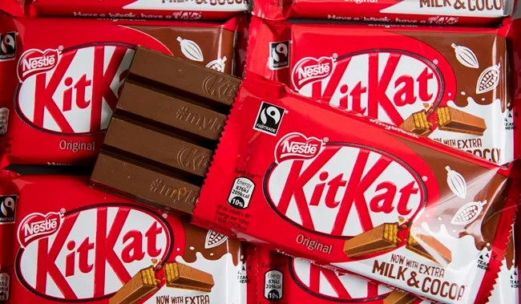

Overview
KitKat is a delicious treat loved by people around the world. It has a unique taste and texture that sets it apart from other candies.The regular bars are made up of two or four pieces that are made up of three layers of wafer that are separated and covered by an outer layer of chocolate. Each finger may be removed from the bar individually. Kit Kat comes in a variety of tastes, including milk, white, and dark chocolate.
Interesting Facts
- Kit Kat is a popular chocolate-covered wafer bar that was originally created in York, England by Rowntree's of York in 1935.
- Kit Kat is available in over 200 countries and regions, making it one of the most widely distributed chocolate bars.
- The Kit Kat Chunky bar held the Guinness World Record for the largest chocolate bar ever made, weighing in at over 5,700 pounds.
Images
Nutritional Information
Here's some basic nutritional information for kitkat:
| Nutrition Information Typical Values |
Per 100g | Per bar | % RI |
|---|---|---|---|
| Energy | 502Kcal | 209Kcal | 10% |
| Fat | 13.6g | 5.6g | 28% |
| Sugar | 49.4g | 20.5g | 23% |
| Fibre | 2.3g | 1.0g | - |
| Protien | 7g | 2.9g | 6% |
| Salt | 0.22g | 0.09g | 2% |